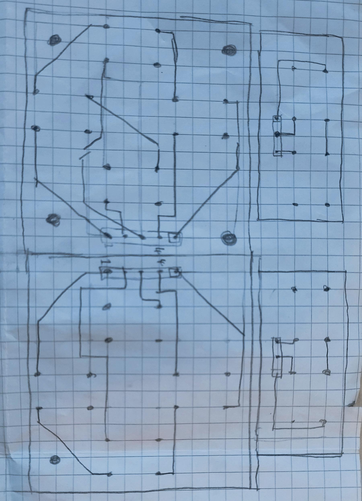
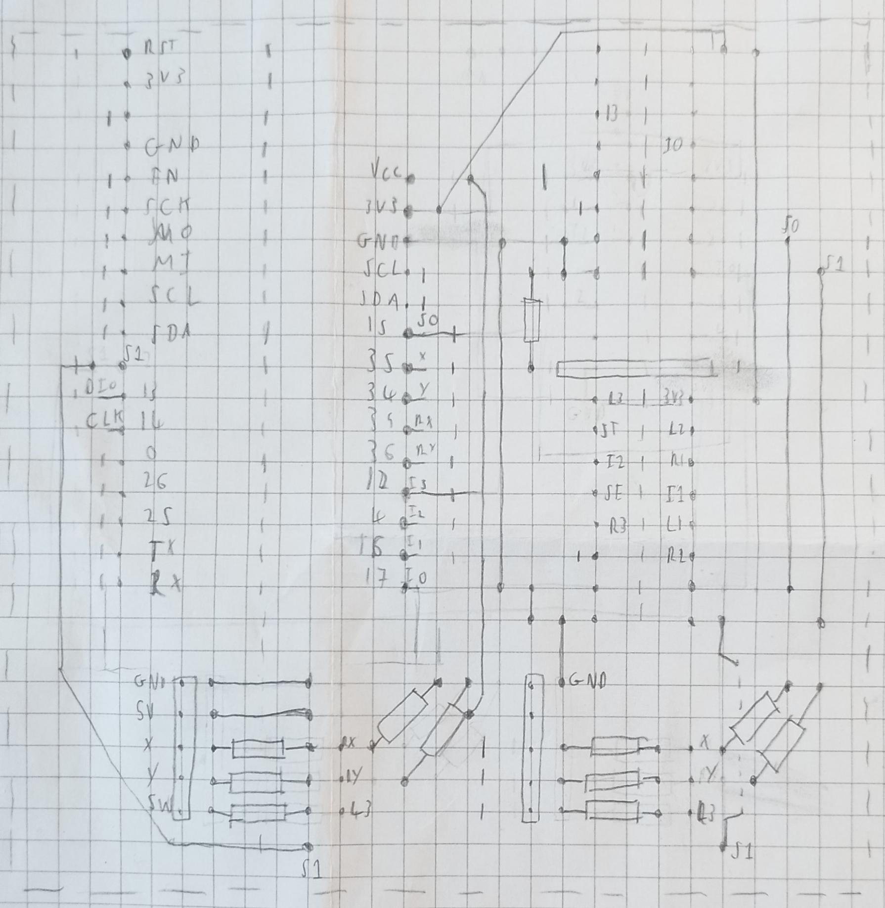
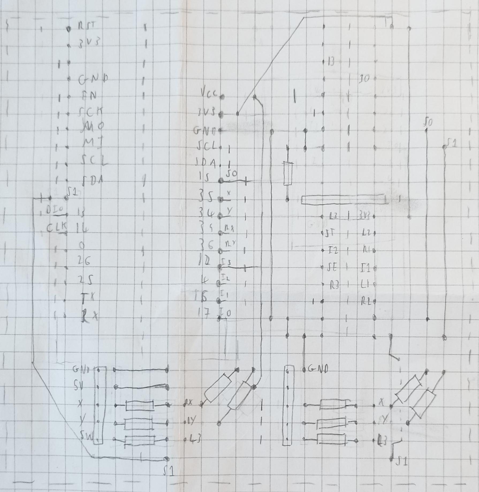

Introduction
This project is my attempt at designing, soldering and coding a Bluetooth gamepad. This project is work in progress.
Origin
The idea initially came about when I wanted to control a robot vehicle with my Playstation dualshock gamepad, I wanted to make something electronic that contained an esp32 that I'd programmed in Rust. When I encountered difficulties connecting the robot using an esp32 to the Playstation controller I decided that instead I was going to first make a gamepad to then control the robot.
Understanding the Technologies
I could have used a custom Bluetooth protocol just to communicate between these 2 devices, but that would mean there would be difficulty testing if one of them didn't work, so I decided that being able to connect to my computer and make the device act as a Human Interface Device (HID) meant that I could get it playing games as well. After doing research about HID's I wrote a HID report descriptor and the corresponding data structure in Rust.
Coding
As mentioned at the beginning I was planning to use Rust to write the project code, luckily Espressif has great support for Rust, including support for the standard library through their esp-idf-hal crate; support for WiFi and Bluetooth through their esp-idf-svc crate and esp32-nimble crates This made it very easy for me to get started by creating a Bluetooth advertiser.
The next step would be to get the gamepad working over Bluetooth, so I read up on the Bluetooth Low Energy stack, specifically GATT services and the Bluetooth state machine to understand the basics, and then read the documentation of nimble, the implementation of BLE on the esp32. I found that Novelbits website was an excellent resource for learning the technology. Eventually, using example code I got it working as a Bluetooth mouse. The code for this project can be found on my Github repository
Buttons
In order to control a gamepad there's usually 16 buttons, 4 for your left thumb, 4 for your right, 2 for start and select, 2 for joysticks and 4 for trigger and shoulder buttons. The esp32 also needed to be directly wired up to the 4 joystick axis, this in total required 20 pins which was far more than the esp32 had available. In order to alleviate this problem I realised I could use 2 de-multiplexers to convert the 16 separate buttons into 4 groups of 4 buttons which you can select the button using 2 select pins, this reduced the pin count for the buttons to 6, leaving more pins free for digital displays if wanted in the future.
After going through many datasheets from electronic stores I found the perfect de-multiplexer for my needs, a 4 channel 4052 IC. While I was testing the IC, I realised it wasn't working properly, the output would flicker and give the incorrect value. After much debugging, I read through the datasheet and found that it takes 200ns to switch, apparently my esp32 was so fast the IC couldn't keep up, after adding an appropriate delay after each button read the program was working perfectly and I could press multiple buttons at the same time and they would all detect properly.

Joysticks
Around the same time I was looking for some joystick modules, I found loose ones designed to replace worn ones in xbox controllers, but they were difficult to solder and design around... but they were good enough that I could stick them into a breadboard to check that the program worked.


The esp32's can only detect voltage so high accurately and the joystick module asked for 5V input, so I realised if I used a potential divider then I could get the perfect range of voltages for the esp32 allowing for the greatest accuracy. Later I found some cheap pre-soldered joystick modules which I removed the male pin headers to and connected wires instead, looking to the future where these modules would be mounted to a plastic case and wires would run down to the main board.
Moving to a prototype board
Up to now everything was being done on a breadboard, connections were unreliable and the whole device was getting quite big for a handheld gamepad. Furthermore, by now I understood the IC's and the circuit diagrams well enough that I could confidently wire everything up. I started by designing a prototype board button module which was unsuccessful, I understood how to wire the buttons to the IC individually, but not how to design a separate board such that it is as simple as possible to plug into the main board. After much more careful design, I found a simple solution to reduce the number of wires and overlaps on the button modules. The ground wire goes around the outside of the buttons connected to one side, and the input wires from each button go towards a single edge in alternating colours, this made it easier to tell with button was which.

It took many iterations of design before I settled having 4 separate button modules connected to the IC on the main board, alternate designs included having 2 button boards with an IC on each one or having 3 button modules, one containing both left and right thumb with an IC, and the other 2 connected up to an IC on the main board. Each of these had their advantages such as simpler wiring on the main board but I decided on the 4 module version because it would be much easier to add a display in between the button modules if that would be useful in the future, I also had a much better idea of how I could design a case for it rather than the others.
After I designed the button modules, I set to work on designing the main board, I knew that I was going to use the same pins as the breadboard as there was no reason to change. I slowly iterated through the design process for the shape of the main board, then the layout of the IC's allowing enough space for wires and module connectors. I designed quite a bit of this in Kicad which I got the hang of over time, and eventually I had a schematic of the main board and the button modules ready for pcb manufacturing when I was ready.

 

Building up the Prototype Board
Once I had designed the computer schematic off my hand drawn schematic I felt confident that it could work. I still had some prototype board left over from the button modules which I started labelling where the copper lanes would need to be cut, where the IC's would be mounted, etc. I then started soldering on the power and ground wires, carefully bending then to the perfect length and soldering them into place. I then soldered in all the resistors for the potential dividers and the buttons. At this point the joystick modules had loose wires dangling so I connected them to a proper connector and soldered the corresponding connector to the board. The board was looking good, and then I just stopped for a while...
I wasn't waiting for much, all I needed were some 16 pin IC holders and I could finish by wiring in the data wires, but I didn't order them until the summer after. I didn't really forget about the project it was always in the back of my mind but I couldn't find time to finish it, well... at least the prototype board.
Anyways, I rediscovered the project and decided to just finish it, I ordered the IC holders, and soon after soldered on all the data wires, and then the jumper headers to plug in the button and esp32. On my first test it didn't work, the buttons were jumbled up, but I got an output, the joysticks worked! After some tinkering I realised one of the IC's had died so after replacing and checking over every adjacent copper lane to make sure there was no shorts I tested it again, and it worked flawlessly!
Finishing up
So that's the state of the project so far, I haven't yet made a plastic shell for it, or designed a display for it, though I do have some commented code to see how it would work. finished This is my first solo project with this level of design process, I wouldn't have been able to do it without some of my friends who were fantastic rubber ducks while I tried ruthlessly to explain to them how the device connects through Bluetooth to the computer, specifically why it isn't working in a particular moment.